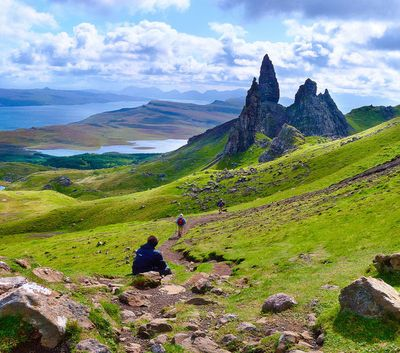

Seit 1984 bieten wir Reisen an die schönsten Küsten Nordeuropas an. Sie können wählen zwischen geplanten Küstenwanderungen, Vogelbeobachtungen. Genießen Sie den Meeblick in unseren fantastischen Küstenhäusern. Mit uns planen Sie keinen Badeurlaub, sondern lernen unverfälschte Küstenabschnitte kennen. Wilder Natur und herrlichen Ausblicken - das alles entdecken Sie "Sea & Travel". Wir stellen ihnen die schönsten Küsten in Nordeuropa vor und informieren über spannende Wanderungen und entlegene Strände und Aussichtspunkte.
Auszug aus der Wanderroute: Die Wanderung über das offene Rannoch Moor gehört zum wohl erfreulichsten Tag Ihrer Reise. Wenn das Wetter nicht mitspielt, wird die Wanderung allerdings zur Herausforderung. Bei Sonnenschein sind die Ausblicke auf die umliegenden Berge atemberaubend. Bei Regen kann man sich nirgendwo verstecken. Die Route werden Sie also so oder so nicht vergessen! Wenn Sie die abgelegene Siedlung Kinshouse verlassen, erreichen Sie bald eine Steigung, die im Volksmund als The Devil's Staircase bekannt ist. Ein solcher Name lässt vermuten, dass Ihre Beine ein gutes Fitnesstraining bekommen! Aber wir verraten Ihnen ein kleines Geheimnis: es ist gar nicht so schwer. Und die Ausblicke von oben über die Ben Nevis Bergkette macht alle Anstrengungen wett.
Sollten Sie bisher beim Thema Wandern Norwegen und seine schönen Wanderwege nicht in Ihre Überlegungen einbezogen haben, entging Ihnen eines der schönsten Länder für diese wundervolle Reise- und Freizeitbeschäftigung. Inmitten einer atemberaubenden und von Gletschern, Bergen sowie Fjorden gekennzeichneten Region wandern Sie ganz nach Ihren Vorlieben. Sowohl kürzere Tagestouren als auch mehrtägiges Trekking werden in Norwegens atemberaubendster Region zu einem Erlebnis. Mehr oder weniger anspruchsvolle Wanderwege führen Sie beim Wandern Norwegen durch grün blühende Landschaften, felsige Abschnitte oder über schneebedeckte Gletscher, die Ihnen die Schönheit Norwegens eindrucksvoll aufzeigen.
Bei uns erhalten Sie nicht nur Wandertipps, Routen und Karten, sondern vollständig zusammengestellte Tourenvorschläge für Ihre individuelle Reise und Ihre Interessen.
Sea & Action Sie wollen spannende Küsten erkundigen und eine Art individuelles Training absolvieren? Wir passen die Wanderabschnitte an ihre Fähigkeiten und Ihr Trainingsziel an. Ziel dieser Module ist es in wunderschöner Natur Seele und Körper zu ertüchtigen.
Sea & Culture Neben der spektaktulären Küste wollen Sie kulturelle Highlights der Region erkundigen. Sie erhalten individuell abgestimmte Pakete inklusive Guide, Fremdenführung, Karten und Unterkünfte.
Sea & Birds Ornithologen kommen bei diesen Paketen voll auf Ihre Kosten. Hier werden Wanderungen zu herrlichen Spots empfohlen, an denen Sie stundenlang auf Ihren Lieblingsvogel warten können. Bei diesen Touren sind sie allerdings jahreszeitlich gebunden, denn wenn die Vogelkinder einmal flügge sind, sind sie schnell weg.
Sea & Relax Das Meer erleben und abends etwas für das eigene Wohlbefinden tun. Kombinieren Sie Ihre Wanderungen mit Wohlfühl-Paketen, wie Yoga, Pilates oder Massagen. In Norwegen bieten wir auch Wanderungen von Sauna zu Sauna an.